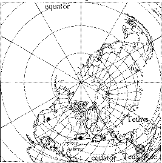

Sauropodomorfos, Elefantes, Levantadores de Peso
Mecanismo
por Wayne Throop
É uma demonstração bastante fácil de que nada maior que os maiores elefantes poderia viver em nosso mundo hoje, e que os maiores dinossauros sobreviveram APENAS porque a natureza do mundo e do sistema solar era então tal que eles não experimentavam a gravidade como fazemos de todo; eles seriam esmagados pelo seu próprio peso, colapsariam em um monte e sufocariam em minutos se o fizessem.coupled with his página do mito de Saturno.
Imagine um planeta como o nosso orbitando uma estrela pequena como Júpiter ou Saturno, ou possivelmente uma dupla estrela pequena composta por duas dessas, com o polo do planeta apontado diretamente para a pequena estrela. Isso significa luz do dia em um lado, escuridão no outro. Sempre... você simplesmente não vive no lado escuro. Isso significa, sem estações. Você simplesmente escolhe que tipo de clima gosta e vive naquela latitude. Assumindo uma órbita suficientemente próxima, e eu ASSUMIRIA uma órbita muito mais próxima de um corpo menor do que nosso atual sol, isso significa que as criaturas que vivem na superfície do planeta também sentiriam, e muito fortemente, a gravidade da pequena e fraca estrela, bem como a gravidade do planeta.But there are problems with the proposition that another body's gravity (or any other inverse-square force, such as electromagnetism, for that matter) was responsible for the possibility of sauropods and other giants. Basically, Ted saves the sauropods at the expense of the rest of the planet, and ends up not saving the sauropods in the first place.Isso, em um planeta do nosso tamanho, permitiria às criaturas crescerem a tamanhos aos quais, como eu demonstrei repetidamente e como a realidade e a observação ditam, elas não podem agora crescer e NÃO crescem agora.
Limite de Roche
The square-cube problem applies to planets as well as to sauropods, and in using "the gravity of the small, faint star" to oppose and thus reduce earth's gravity, Ted's proposed solution fails for essentially the same reason that he says the problem exists in the first place.Os problemas de um planeta do tamanho da Terra com a lei do quadrado-cubo são tais que ele age quase como uma gota de líquido. É por isso que a Terra é uma esfera com uma precisão de uma parte em milhares: a superfície da Terra pode desviar da "superfície de menor energia" por muito pouco. Isso significa que, quando submetido a marés como as que Ted descreve, a Terra se deformará.
O limite de Roche é nomeado em homenagem a um físico que determinou quanto maré um planeta pode suportar antes de ser destruído. Usando uma aproximação viável para calcular este limite (ou seja, para corpos de densidade igual, o Limite de Roche é 2,44 vezes o raio do maior), descobrimos que marés de aproximadamente 0,14g na Terra destruiriam completamente ela.
Contudo, a teoria de Ted exige marés de 0,7g ou mais. Isso é muitas vezes mais do que o suficiente para destruir a Terra.
Cálculos
Tratando entre 1e3 e 1e6 vezes a massa da Terra, (isto é, no intervalo de um planeta primário entre gigante gasoso e massa solar) obtemos<blockquote> 1e3/23.4^2-1e3/24.4^2 ~= 0.145 1e6/243^2-1e6/244^2 ~= 0.139 </blockquote>
Condições no Ponto Sub-Saturno
Ted advocates the notions of Lynn Rose that tidal forces distorted the earth, and that this is the reason why Pangaea isn't quite a perfect circle, but rather has the Tethys sea projecting into it.Rose observa que a Pangeia estaria sentada sobre a extremidade alta (estreita) deste antigo mundo em forma de ovo, e que o mundo posteriormente se tornou esférico como é hoje quando o sistema antigo se desfez.Thus, the "magic mountain" motifs in mythology (according to Rose and Ted) are due to this giant mountain pulled up under the sub-saturn point.
Porém, há problemas com este cenário.
- Se uma rocha sólida for puxada para formar uma montanha, a água seria puxada ainda mais para cima; a "montanha" seria, na verdade, um oceano.
- Na escala de um saliente de cerca de 1000 km na Terra, a "montanha" seria completamente invisível para as pessoas em a Terra, porque o horizonte local seria apenas ligeiramente modificado. A maior parte da montanha seria simplesmente abaixo do horizonte (ou sob os pés; ou melhor, "subfin" já que seria um oceano).
Localizações de fósseis e pegadas de saurópodes
Tidal forces fall off rapidly with distance from the nearside of a body. In fact, even if gravity were reduced to zero at the sub-saturn point (which is already impossible due to the limite de Roche, but go with it for a moment), it would not be adequate for Ted's theory about 20 or 30 degrees away.
{kind=link}
Ted propôs que talvez as inundações tenham lavado os restos até onde foram encontrados hoje, e que eles realmente viviam no ponto sub-saturno. Mas essa posição é insustentável, porque foram encontradas pegadas que correspondem às localizações dos fósseis, e as pegadas não poderiam ter sido movidas intactas por uma inundação ou outra catástrofe.
[Anterior] |
[Topo] |
[Próximo] |
| As Perguntas Frequentes | Arquivos Imperdíveis | Índice | Criacionismo | Evolução | Idade da Terra | Geologia do Dilúvio | Catastrofismo | Debates |